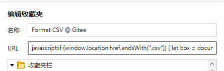
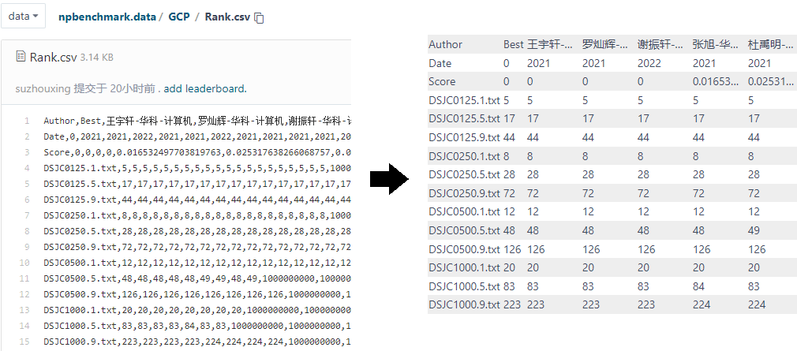
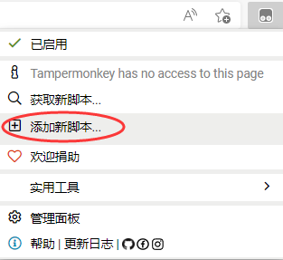
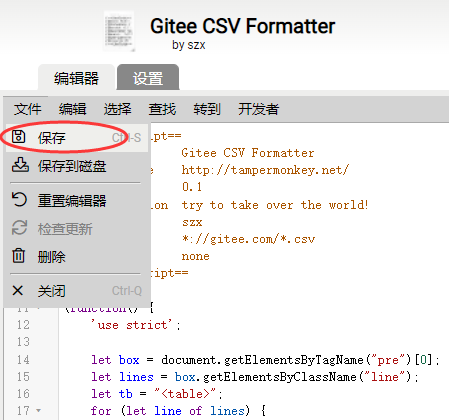

Gitee 渲染 CSV 文件
使用 Gitee 挺长一段时间了, 感觉它是一个非常优秀的国内免费代码托管平台. 美中不足的是, 它不支持对常见的数据文件格式进行渲染. 其中就有 CSV 等纯文本表格文件, 在没有按列对齐的情况下可读性相对较低. 作为一个程序员, 当然要自己动手丰衣足食. 下面简单记录一下我的魔改方案. 此外, 顺便夹带一点关于表格 CSS 样式设置的小技巧.
使用浏览器书签手动格式化
其实浏览器的书签有一个隐藏功能, 就是执行 javascript 代码. 具体地, 若书签的 URL 以 javascript: 开头, 则后面的部分将被视为 javascript 代码, 打开书签将运行相关代码. 利用这个隐藏功能, 我们可以使用下面的 javascript 代码对 CSV 文件预览页面进行格式化.
1 | javascript:if (window.location.href.endsWith(".csv")) { let box = document.getElementsByTagName("pre")[0]; let lines = box.getElementsByClassName("line"); let tb = "<table>"; for (let line of lines) { let words = line.innerHTML.split(","); tb += "<tr>"; for (let word of words) { tb += "<td>" + word + "</td>"; } tb += "</tr>"; } tb += "</table>"; box.innerHTML = tb; let sty = document.createElement("style"); sty.innerHTML = "table { border-collapse: collapse; border-spacing: 0; } td { max-width: 5em; padding: 2px; white-space: nowrap; overflow: hidden; text-overflow: ellipsis; } td:nth-child(1) { max-width: 16em; } tr:nth-child(odd) { background-color: #eee; } tr:nth-child(even) { background-color: #fff; }"; document.head.append(sty); } |
具体地, 可以参考下图添加书签, 书签名称随便填自己记得住的名字, URL 栏粘贴上面的代码.  之后在 CSV 文件展示页面加载完毕后点击该书签, 将以表格形式展示 CSV 文件, 得到下图所示的效果. 
使用浏览器插件自动格式化
基于同样的原理, 我们还可以利用 TamperMonkey 等插件实现自动格式化. TamperMonkey 等插件本质上是一个简化插件开发的插件, 它让用户可以自己编写代码, 在页面加载后对 DOM 结构进行操作. 具体地, 安装好插件后, 点击新建脚本.  复制下面的代码粘贴到代码编辑框后, 点击保存脚本.  之后打开 CSV 文件便可自动将其渲染为表格的形式.
1 | // ==UserScript== |
其中, @match 一行比较重要, 决定了执行该代码的条件, 即哪些 URL 符合执行条件. 此处设置为 gitee.com 内以 .csv 结尾的 URL.
此外, 表格的 CSS 样式中有个很实用的选择器 nth-child. 该选择器接受一个参数, 取值可以是 odd, even, 或 an+b (a 和 b 为正整数, 表示除 a 模 b 的所有正整数). 该选择器可以实现两行甚至多行交错显示不同样式, 或者自动对首行设置特殊样式.